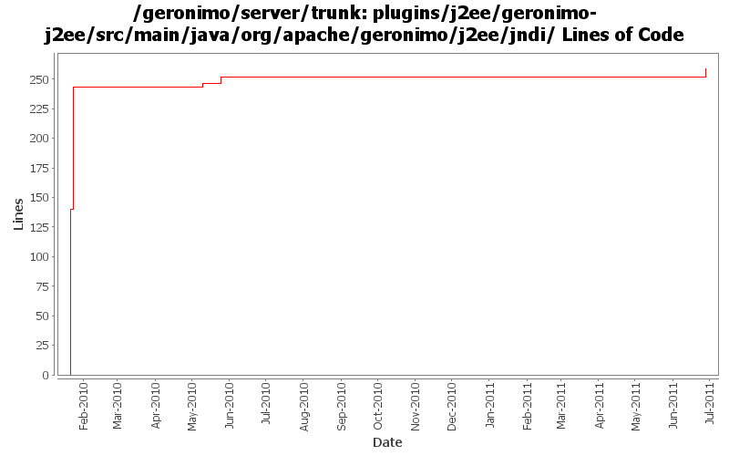

[root]/plugins/j2ee/geronimo-j2ee/src/main/java/org/apache/geronimo/j2ee/jndi

| Author | Changes | Lines of Code | Lines per Change |
|---|---|---|---|
| Totals | 11 (100.0%) | 283 (100.0%) | 25.7 |
| djencks | 6 (54.5%) | 251 (88.7%) | 41.8 |
| xuhaihong | 3 (27.3%) | 30 (10.6%) | 10.0 |
| gawor | 2 (18.2%) | 2 (0.7%) | 1.0 |
GERONIMO-5066 Use naming Reference to set up Datasources and use them to get global scope datasources from server to app client
8 lines of code changed in 1 file:
a. remove the use of configurationUrl \n b. Add a BundleAwareReference interface
24 lines of code changed in 2 files:
1. Separate the map for module scope and comp scope
2. Keep the same map instance in the shareContext, so that other module extension could have chance to add jndi info
6 lines of code changed in 1 file:
GERONIMO-5232: Support @Resource.lookup for env-entry, resource-ref, resource-env-ref, and message-destination-ref. Also fixes java:app jndi namespace
2 lines of code changed in 2 files:
GERONIMO-4996 GERONIMO-5025 separate jndi context setup from web app context since jsf needs it too. Hook up myfaces which now starts. Don't know if myfaces works
103 lines of code changed in 2 files:
GERONIMO-5025 Initial work on ee 6 scoped jndi stuff. Minimal testing so far
140 lines of code changed in 3 files: